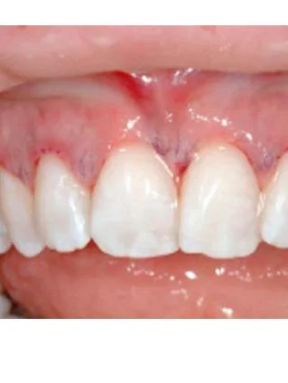

نسخه استخراجشده؛ ترجمه یا تأیید علمی انجام نشده است. وضعیت: captured
به یاد بیاور از درس آناتومی: اتصال فوقکرستال (که پیشتر «عرض بیولوژیک» نامیده میشد) میانگین ابعادی دارد:

| جزء | میانگین (گارجیولو ۱۹۶۱) |
|---|---|
| اپیتلیوم اتصالی | حدود ۰٫۹۷ میلیمتر |
| چسبندگی بافت همبند | حدود ۱٫۰۷ میلیمتر |
| مجموع اتصال فوقکرستال | 🔑 حدود ۲٫۰۴ میلیمتر |
| عمق سولکوس | حدود ۰٫۶۹ میلیمتر |
🔑 قاعده عملی افزایش طول تاج: از مارجین آینده ترمیم تا ستیغ استخوان باید حداقل ۳ میلیمتر فاصله باشد — حدود ۲ میلیمتر اتصال فوقکرستال بهعلاوه حدود ۱ میلیمتر سولکوس.
📌 بسیاری از درمانگران ۳ میلیمتر را استاندارد میگیرند و برخی برای حاشیه ایمنی بیشتر، ۴ میلیمتر را ترجیح میدهند — بهویژه اگر ترمیم زیرلثهای باشد.
مارجین ترمیم که به اتصال فوقکرستال تجاوز کند، به یکی از این دو پیامد میانجامد:
التهاب مزمن که با هیچ مقدار کنترل پلاک برطرف نمیشود.
تحلیل استخوان و لثه — بدن با تحلیل، فضای لازم برای اتصال فوقکرستال را خودش بازمیسازد.
🔑 نتیجه: تجاوز به این فضا، یک خطای زیستشناختی است نه یک نقص ظاهری — و بدن ناگزیر آن را «اصلاح» میکند، اما به قیمت از دست رفتن بافت.
| دسته | مورد |
|---|---|
| ترمیمی / عملکردی | پوسیدگی یا شکستگی زیرلثهای |
| تاج بالینی کوتاه برای گیر پروتز | |
| سایش شدید با ارتفاع ناکافی | |
| زیبایی | لبخند لثهای (Gummy smile) |
| تاجهای نامتقارن یا کوتاه از نظر ظاهری |
| وضعیت | رویکرد |
|---|---|
| لثه کراتینیزه فراوان و استخوان در فاصله مناسب | ژنژیوکتومی بهتنهایی — سادهترین حالت |
| نیاز به تغییر سطح استخوان | 🔑 فلپ جابهجاشده به اپیکال + جراحی استخوان — رایجترین سناریو |
| لثه کراتینیزه ناکافی | فلپ اپیکالی الزامی است؛ ژنژیوکتومی ممنوع |
🔑 مهمترین نکته فنی: در بیشتر موارد، برداشتن بافت نرم بهتنهایی کافی نیست. اگر استخوان را در فاصله مناسب قرار ندهی، اتصال فوقکرستال دوباره در همان موقعیت تشکیل میشود و لثه به موقعیت قبلی بازمیگردد — و کل جراحی بینتیجه میماند.
| ناحیه | فاصله تا ترمیم نهایی |
|---|---|
| ناحیه غیرزیبایی | حدود ۶ تا ۸ هفته |
| ناحیه زیبایی | 🔑 حداقل ۳ تا ۶ ماه |
⚠️ چرا در ناحیه زیبایی اینقدر طولانی؟ چون موقعیت نهایی مارجین لثه تا ماهها پس از عمل تثبیت نمیشود. ساخت روکش نهایی پیش از تثبیت، به مارجین نامناسب و نتیجه زیبایی شکستخورده میانجامد.
⚠️ افزایش طول تاج، درمان همه لبخندهای لثهای نیست. علتهای متفاوتی وجود دارد و هر کدام درمان خودش را میطلبد:
| علت | درمان مناسب |
|---|---|
| رویش غیرفعال تغییریافته (لثه روی تاج مانده) | 🟢 افزایش طول تاج |
| رشد عمودی بیشازحد فک بالا | 🔴 جراحی ارتوگناتیک — نه پریودنتال |
| لب کوتاه یا بیشفعالی عضله بالابرنده لب | جراحی جابهجایی لب یا تزریق بوتاکس |
| رویش دندانی-آلوئولار بیشازحد | اینتروژن ارتودنسی |
| بزرگشدگی لثه | درمان علت + ژنژیوکتومی |
🔑 تشخیص افتراقی علت لبخند لثهای، مهمترین گام است. انجام افزایش طول تاج در بیماری که علت او رشد عمودی فک است، مشکل را حل نمیکند و فقط بافت سالم را قربانی میکند.
تقارن با دندان قرینه — مرجع اصلی طراحی.
نسبت عرض به طول تاج مرکزی: حدود ۷۵ تا ۸۰ درصد.
خط لثه: زنیت لثه مرکزی و کانین تقریباً همسطح، و لترال کمی کرونالیتر.
احترام به خط لبخند و موقعیت لب بالا.
عرض بافت بیندندانی — پیشگیری از مثلث سیاه.
نسبت تاج به ریشه: برداشتن استخوان، این نسبت را بدتر میکند. در دندان با ریشه کوتاه، محدودیت جدی است.
درگیری فورکیشن: برداشتن استخوان میتواند فورکیشن را در معرض قرار دهد.
دندانهای مجاور: برداشتن استخوان یک دندان، بر استخوان مجاور هم اثر میگذارد.
زیبایی: برهنه شدن ریشه و مثلث سیاه.
🔑 گزینه جایگزین مهم: در دندانی با ریشه کوتاه یا فورکیشن نزدیک، اکستروژن ارتودنسی (کشیدن آهسته دندان به سمت تاج) میتواند جایگزین بهتری باشد — چون بهجای برداشتن استخوان، دندان را بالا میآورد.
⚠️ اشتباه رایج ۱: فاصله لازم از مارجین ترمیم تا ستیغ استخوان، حداقل ۳ میلیمتر است.
⚠️ اشتباه رایج ۲: برداشتن بافت نرم بهتنهایی کافی نیست؛ بدون تغییر سطح استخوان، لثه بازمیگردد.
⚠️ اشتباه رایج ۳: در ناحیه زیبایی، ترمیم نهایی ۳ تا ۶ ماه پس از عمل.
نوع سؤال: ساخت کلمه · 5 خانه
حروف منبع: د · ه · ن · م · ب